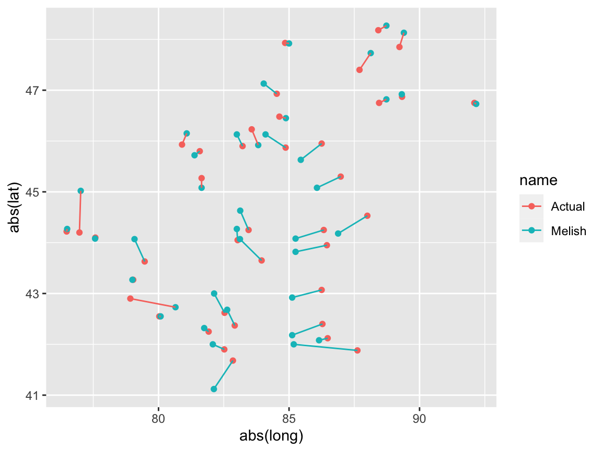

library(knitr) library(dplyr) library(tidyr) library(ggplot2) library(ggrepel) library(fuzzyjoin) library(lychee) data(greens3)
This vignettes introduces the lychee package and its two core functions: linkr and joinr. Both of these functions are complementary and are powered by the same code. Both ease linking and joining data frames with key variables that are are similar but not identical (e.g., a variable with geographic names spelled slightly different or nearby geographic coordinates). Different from the fuzzyjoin package, the lychee package does not output all matches given some definition of sufficient similarity, but constructs optimal one-to-one matches minimizing the global difference across all matches.
This vignette relies on a simple dataset to illustrates how linkr and joinr work. The dataset greens3 which is part of the package includes for each federal and European election the top three counties where Germany’s green party received most votes. In each election, the county name is spelled slightly different - either because the county name changed or because of minor spelling mistakes made during the transcription. The example belows shows the vote shares for the county Freiburg where the Greens received the highest vote share across all 13 elections. Across the 13 observations, there are 5 different spellings for the county.
greens3 %>% filter(city_clean=="Freiburg") #> # A tibble: 13 x 5 #> city city_clean year election greens #> <chr> <chr> <int> <chr> <dbl> #> 1 Freiburg im Breisgau, Stadt Freiburg 1994 BTW 21.9 #> 2 Freiburg im Breisgau, Stadt Freiburg 1998 BTW 24.1 #> 3 Freiburg im Breisgau, Stadt Freiburg 2002 BTW 28.7 #> 4 Freiburg im Breisgau Freiburg 2005 BTW 26.2 #> 5 Freiburg (Breisgau) Freiburg 2009 BTW 25.4 #> 6 Freiburg im Breisgau Freiburg 2013 BTW 22.1 #> 7 Freiburg im Breisgau, Stadtkreis Freiburg 2017 BTW 23.3 #> 8 Freiburg im Breisgau, Stadt Freiburg 1994 EP 29 #> 9 Freiburg im Breisgau, Stadt Freiburg 1999 EP 25.8 #> 10 Stadtkreis Freiburg im Breisgau Freiburg 2004 EP 36.8 #> 11 Freiburg (Breisgau) Freiburg 2009 EP 32.5 #> 12 Freiburg im Breisgau Freiburg 2014 EP 27.7 #> 13 Freiburg im Breisgau, Stadtkreis Freiburg 2019 EP 38.5
We will use joinr and linkr to link and join observations that belong to the same county. To facilitate comparisons, the data also includes a standardized version of the county name (name_clean).
| city_clean | election | 1994 | 1998 | 2002 | 2005 | 2009 | 2013 | 2017 |
|---|---|---|---|---|---|---|---|---|
| Darmstadt | BTW | 20.3 | 20.9 | 17.8 | ||||
| Freiburg | BTW | 21.9 | 24.1 | 28.7 | 26.2 | 25.4 | 22.1 | 23.3 |
| Heidelberg | BTW | 18.4 | 18.2 | 22.9 | 19.9 | 22.4 | 18.9 | 21.9 |
| Tübingen | BTW | 15.1 | 17.0 | 18.3 | 19.5 |
| city_clean | election | 1994 | 1999 | 2004 | 2009 | 2014 | 2019 |
|---|---|---|---|---|---|---|---|
| Darmstadt | EP | 27.9 | |||||
| Flensburg | EP | 37.1 | |||||
| Freiburg | EP | 29.0 | 25.8 | 36.8 | 32.5 | 27.7 | 38.5 |
| Heidelberg | EP | 21.9 | 20.5 | 28.9 | 28.6 | 23.9 | |
| Kiel | EP | 37.0 | |||||
| Lüchow-Dannenberg | EP | 29.9 | 25.6 | ||||
| Münster | EP | 20.7 | |||||
| Tübingen | EP | 19.3 |
We begin with a simple merge of the observations from the federal election in 1994 and 2017 using the variable name as key variable. To focus on the essentials, the data subsetting and variable selection is omitted.
By default, joinr compares the key variable(s) (the county name in the example) in the two data frames using the optimal string alignment metric and picks the best combination of 1-to-1 matches such that the sum of the distances between matches is minimized.
btw94 #> # A tibble: 3 x 2 #> city greens #> <chr> <dbl> #> 1 Tübingen 15.1 #> 2 Heidelberg 18.4 #> 3 Freiburg im Breisgau, Stadt 21.9 btw17 #> # A tibble: 3 x 2 #> city greens #> <chr> <dbl> #> 1 Tübingen 19.5 #> 2 Heidelberg, Stadtkreis 21.9 #> 3 Freiburg im Breisgau, Stadtkreis 23.3 joinr(btw94,btw17,by='city', suffix=c("94","17"), add_distance=TRUE) #> Loading required package: stringdist #> # A tibble: 3 x 5 #> city94 greens94 match_dist city17 greens17 #> <chr> <dbl> <dbl> <chr> <dbl> #> 1 Tübingen 15.1 0 Tübingen 19.5 #> 2 Heidelberg 18.4 12 Heidelberg, Stadtkreis 21.9 #> 3 Freiburg im Breisgau, … 21.9 5 Freiburg im Breisgau, St… 23.3
Under the hood, joinr takes advantage of the stringdist-package and constructs a distance matrix that takes the following form:
stringdistmatrix(btw94[['city']], btw17[['city']]) #> [,1] [,2] [,3] #> [1,] 0 19 28 #> [2,] 9 12 28 #> [3,] 24 21 5
Each entry in this matrix describes the string distance between a county name in 1994 and a county name in 2017.
To find one-to-one matches, joinr applies a fast version of the Hungarian algorithm to the distance matrix. This algorithm assigns each row of the distance matrix to a column such that the sum of cell values is as small as possible. In the context of the running example, the algorithm finds the best combination of county names from 1994 and 2017 such that the total string distance between them is as small as possible. The solution, as shown above, is a set of three matches with a total string distance of 17 (0+12+5 in the above matrix).
The algorithm, implemented in the assignment function from the adagio package only takes into account the integer part of the distance matrix. The decimal part is ignored. For many string distance metrics this is not relevant as they the distance matrix consists of integers only. A warning is printed if the distance matrix does not consist of integers but real values (“Warning in assignment(m): Matrix ‘cmat’ not integer; will take floor of it.”). In these situations, it might be useful to scale the distance matrix by some constant to increase precision. The scaling parameter can be defined via the parameter parameter C which by default is 1.
The application of the Hungarian algorithm to the distance matrix sets joinr apart from fuzzyjoin. The function stringdist_full_join which is part of the fuzzyjoin package also relies on a string distance matrix but any combination with a distance value of less than a cutoff is considered a match. In other words, fuzzyjoin does not enforce a one-to-one constraint when constructing matches. While this is an desirable in some situation, it isn’t in others.
In the context of the running example, it is clearly undesirable as we only wish to match each observation once. When using fuzzyjoin with the running example (and relying on the package’s default cutoff value of 2), we find that not all observations are correctly matched. When increasing the cutoff value, more matches are formed but Tübingen and Heidelberg in 1994 are matched with Tübingen in 2017 leaving Heidelberg 2017 without a match.
# Using the fuzzyjoin package instead of lychee here stringdist_full_join(btw94,btw17, method='osa', by='city', max_dist=2) #> # A tibble: 5 x 4 #> city.x greens.x city.y greens.y #> <chr> <dbl> <chr> <dbl> #> 1 Tübingen 15.1 Tübingen 19.5 #> 2 Heidelberg 18.4 <NA> NA #> 3 Freiburg im Breisgau, Stadt 21.9 <NA> NA #> 4 <NA> NA Heidelberg, Stadtkreis 21.9 #> 5 <NA> NA Freiburg im Breisgau, Stadtkreis 23.3 stringdist_full_join(btw94,btw17, method='osa', by='city', max_dist=10) #> # A tibble: 4 x 4 #> city.x greens.x city.y greens.y #> <chr> <dbl> <chr> <dbl> #> 1 Tübingen 15.1 Tübingen 19.5 #> 2 Heidelberg 18.4 Tübingen 19.5 #> 3 Freiburg im Breisgau, Stadt 21.9 Freiburg im Breisgau, Stadtkreis 23.3 #> 4 <NA> NA Heidelberg, Stadtkreis 21.9
joinr
By default joinr uses optimal string alignment as a distance metric but other distance metrics can be used. Changes in the metric can go a long way when joinr produces suboptimal matches as the next example with the election outcomes from 2013 and 2017 illustrates.
btw13 #> # A tibble: 3 x 2 #> city greens #> <chr> <dbl> #> 1 Darmstadt, Wissenschaftsstadt 17.8 #> 2 Heidelberg 18.9 #> 3 Freiburg im Breisgau 22.1 btw17 #> # A tibble: 3 x 2 #> city greens #> <chr> <dbl> #> 1 Tübingen 19.5 #> 2 Heidelberg, Stadtkreis 21.9 #> 3 Freiburg im Breisgau, Stadtkreis 23.3 joinr(btw13,btw17,by=c("city"), suffix=c("94","17"), add_distance=TRUE) #> # A tibble: 3 x 5 #> city94 greens94 match_dist city17 greens17 #> <chr> <dbl> <dbl> <chr> <dbl> #> 1 Darmstadt, Wissenschaf… 17.8 26 Heidelberg, Stadtkreis 21.9 #> 2 Heidelberg 18.9 9 Tübingen 19.5 #> 3 Freiburg im Breisgau 22.1 12 Freiburg im Breisgau, St… 23.3
The default settings lead to a suboptimal join. A change to the longest common substring distance improves the result. Users may use any string distance metric that is part of the stringdist package.
joinr(btw13,btw17,by=c("city"), suffix=c("94","17"), add_distance=TRUE, method='lcs') #> # A tibble: 3 x 5 #> city94 greens94 match_dist city17 greens17 #> <chr> <dbl> <dbl> <chr> <dbl> #> 1 Darmstadt, Wissenschaf… 17.8 31 Tübingen 19.5 #> 2 Heidelberg 18.9 12 Heidelberg, Stadtkreis 21.9 #> 3 Freiburg im Breisgau 22.1 12 Freiburg im Breisgau, St… 23.3
The result is still suboptimal as it matches the city of Darmstadt with the city of Tübingen. This is because by default, joinr matches every row in a (shorter) data frame with a row in a (longer) data frame. This behavior is useful when one data frame is known to be a subset of the other. If that is not the case and there is only a partial overlap, the caliper parameter is useful. It regulates up to which distance two rows are considered a match. Reducing the caliper value reduces the number of matches. Some iterative trial and error is necessary to choose a sensible value. The parameter full regulates if unmatched rows from the shorter data frame should be appended to the output (full=TRUE, the default) or dropped (full=FALSE).
Applying the caliper value to the example above leads to a perfect result.
joinr(btw13,btw17,by=c("city"), suffix=c("94","17"), add_distance=TRUE, method='lcs', caliper=12, full=TRUE) #> # A tibble: 4 x 5 #> city94 greens94 match_dist city17 greens17 #> <chr> <dbl> <dbl> <chr> <dbl> #> 1 Darmstadt, Wissenschaf… 17.8 NA <NA> NA #> 2 Heidelberg 18.9 12 Heidelberg, Stadtkreis 21.9 #> 3 Freiburg im Breisgau 22.1 12 Freiburg im Breisgau, St… 23.3 #> 4 <NA> NA NA Tübingen 19.5
In many situations it might be useful to perform the above operations within certain groups. Consider the task of matching the vote shares for 1994 and 2009 in both the federal elections (election='BTW') and the European parliament elections (election='EP'). Without constraining the matching to proceed within the two groups, we might end up with matches that merge observations from the federal and the European parliament elections as the example demonstrates.
elec94 #> # A tibble: 6 x 3 #> city election greens #> <chr> <chr> <dbl> #> 1 Tübingen BTW 15.1 #> 2 Heidelberg, Stadt BTW 18.4 #> 3 Freiburg im Breisgau, Stadt BTW 21.9 #> 4 Münster, Stadt EP 20.7 #> 5 Heidelberg, Stadt EP 21.9 #> 6 Freiburg im Breisgau, Stadt EP 29 elec09 #> # A tibble: 6 x 3 #> city election greens #> <chr> <chr> <dbl> #> 1 Darmstadt, Wissenschaftsstadt BTW 20.9 #> 2 Heidelberg BTW 22.4 #> 3 Freiburg (Breisgau) BTW 25.4 #> 4 Heidelberg EP 28.6 #> 5 Lüchow-Dannenberg EP 29.9 #> 6 Freiburg (Breisgau) EP 32.5 joinr(elec94,elec09, by=c("city"), suffix=c("94","09"), add_distance=TRUE, caliper=12, method='lcs',full=TRUE) #> # A tibble: 8 x 7 #> city94 election94 greens94 match_dist city09 election09 greens09 #> <chr> <chr> <dbl> <dbl> <chr> <chr> <dbl> #> 1 Tübingen BTW 15.1 NA <NA> <NA> NA #> 2 Heidelberg, … BTW 18.4 7 Heidelberg EP 28.6 #> 3 Freiburg im … BTW 21.9 12 Freiburg (Br… BTW 25.4 #> 4 Münster, Sta… EP 20.7 NA <NA> <NA> NA #> 5 Heidelberg, … EP 21.9 7 Heidelberg BTW 22.4 #> 6 Freiburg im … EP 29 12 Freiburg (Br… EP 32.5 #> 7 <NA> <NA> NA NA Lüchow-Danne… EP 29.9 #> 8 <NA> <NA> NA NA Darmstadt, W… BTW 20.9
Fortunately, joinr allows to join observations only within groups using the parameter strata. In principle, strata can be defined by a series of variables, where each combination of values defines a strata.
joinr(elec94,elec09,by=c("city"), strata='election', suffix=c("94","09"), add_distance=TRUE, caliper=12, full=TRUE, method='lcs') #> # A tibble: 8 x 6 #> election city94 greens94 match_dist city09 greens09 #> <chr> <chr> <dbl> <dbl> <chr> <dbl> #> 1 BTW Tübingen 15.1 NA <NA> NA #> 2 BTW Heidelberg, Stadt 18.4 7 Heidelberg 22.4 #> 3 BTW Freiburg im Breisg… 21.9 12 Freiburg (Breisgau) 25.4 #> 4 BTW <NA> NA NA Darmstadt, Wissensc… 20.9 #> 5 EP Münster, Stadt 20.7 NA <NA> NA #> 6 EP Heidelberg, Stadt 21.9 7 Heidelberg 28.6 #> 7 EP Freiburg im Breisg… 29 12 Freiburg (Breisgau) 32.5 #> 8 EP <NA> NA NA Lüchow-Dannenberg 29.9
While joinr joins data frames, linkr assigns a common identifier to matching observations. Going back to the first example with the election outcomes from 1994 and 2017, we assign a common identifier to the stacked data frame instead of merging columns of one data frame with the columns in another.
linkr(btw94,btw17,by=c("city"), add_distance=TRUE, caliper=12, method='lcs') %>% arrange(match_id) #> # A tibble: 6 x 4 #> city greens match_id match_dist #> <chr> <dbl> <int> <dbl> #> 1 Tübingen 15.1 1 0 #> 2 Tübingen 19.5 1 0 #> 3 Heidelberg 18.4 2 12 #> 4 Heidelberg, Stadtkreis 21.9 2 12 #> 5 Freiburg im Breisgau, Stadt 21.9 3 5 #> 6 Freiburg im Breisgau, Stadtkreis 23.3 3 5
In all of the above examples, we used joinr and linkr to constructed one-to-one matches between two data frames. But in some situations we might wish to construct a chain of matches. For example, we might wish to assign a common identifier to all observations of the same county across six federal elections.
To facilitate such linkage, the package provides the function linkr_multi which constructs matches iteratively. The first two data frames are matched as with linkr. The function then selects one observation per matched pair (and all singletons) and matches those with the third data frame. Selecting again one observation per matched tuple, the function matches those with the fourth data frame and so forth. By default, the last observation per matched pair is used (this can be changed).
The output below illustrates the application to the running example. For an optimal result, it is necessary to select a slightly higher caliper value then before.
linkr_multi( df=filter(greens3, election=="BTW"), by='city', slice='year', method='lcs', caliper=15) %>% arrange(match_id,year) %>% data.frame #> city city_clean year election greens match_id #> 1 Tübingen Tübingen 1994 BTW 15.1 1 #> 2 Tuebingen Tübingen 1998 BTW 17.0 1 #> 3 Tübingen Tübingen 2005 BTW 18.3 1 #> 4 Tübingen Tübingen 2017 BTW 19.5 1 #> 5 Heidelberg, Stadt Heidelberg 1994 BTW 18.4 2 #> 6 Heidelberg, Stadt Heidelberg 1998 BTW 18.2 2 #> 7 Heidelberg, Stadt Heidelberg 2002 BTW 22.9 2 #> 8 Heidelberg Heidelberg 2005 BTW 19.9 2 #> 9 Heidelberg Heidelberg 2009 BTW 22.4 2 #> 10 Heidelberg Heidelberg 2013 BTW 18.9 2 #> 11 Heidelberg, Stadtkreis Heidelberg 2017 BTW 21.9 2 #> 12 Freiburg im Breisgau, Stadt Freiburg 1994 BTW 21.9 3 #> 13 Freiburg im Breisgau, Stadt Freiburg 1998 BTW 24.1 3 #> 14 Freiburg im Breisgau, Stadt Freiburg 2002 BTW 28.7 3 #> 15 Freiburg im Breisgau Freiburg 2005 BTW 26.2 3 #> 16 Freiburg (Breisgau) Freiburg 2009 BTW 25.4 3 #> 17 Freiburg im Breisgau Freiburg 2013 BTW 22.1 3 #> 18 Freiburg im Breisgau, Stadtkreis Freiburg 2017 BTW 23.3 3 #> 19 Darmstadt, Stadt Darmstadt 2002 BTW 20.3 4 #> 20 Darmstadt, Wissenschaftsstadt Darmstadt 2009 BTW 20.9 4 #> 21 Darmstadt, Wissenschaftsstadt Darmstadt 2013 BTW 17.8 4
In this examples there are lots of matches to discover which makes it an easy case for linkr_multi. When there are fewer (true) matches, the false positive rate typically goes up and even after playing around with the caliper, the linking is imperfect as the next example with the subset of observations from the European elections demonstrates. In the example below the caliper was selected to have zero false positives which leaves two observations from Heidelberg and Freiburg unlinked.
linkr_multi( df=filter(greens3, election=="EP"), by='city', slice='year', method='lcs', caliper=9) %>% select(-city_clean) %>% arrange(match_id,year) %>% data.frame #> city year election greens match_id #> 1 Heidelberg, Stadt 1994 EP 21.9 1 #> 2 Heidelberg, Stadt 1999 EP 20.5 1 #> 3 Heidelberg 2009 EP 28.6 1 #> 4 Heidelberg 2014 EP 23.9 1 #> 5 Freiburg im Breisgau, Stadt 1994 EP 29.0 2 #> 6 Freiburg im Breisgau, Stadt 1999 EP 25.8 2 #> 7 Freiburg im Breisgau, Stadtkreis 2019 EP 38.5 2 #> 8 Lüchow-Dannenberg 2009 EP 29.9 3 #> 9 Lüchow Dannenberg 2014 EP 25.6 3 #> 10 Freiburg (Breisgau) 2009 EP 32.5 4 #> 11 Freiburg im Breisgau 2014 EP 27.7 4 #> 12 Münster, Stadt 1994 EP 20.7 5 #> 13 Tübingen 1999 EP 19.3 6 #> 14 Darmstadt, Stadt 2004 EP 27.9 7 #> 15 Stadtkreis Heidelberg 2004 EP 28.9 8 #> 16 Stadtkreis Freiburg im Breisgau 2004 EP 36.8 9 #> 17 Kiel, Landeshauptstadt 2019 EP 37.0 10 #> 18 Flensburg, Stadt 2019 EP 37.1 11
All previous examples use the city name to link and join data frames. The next example is one where we use geographic coordinates as key variables. That said, in principle users can also define their own distance function and use that within joinr or linkr.
To illustrate how to use geographic distance functions, we use the OldMaps data from the package HistData which includes the latitudes and longitudes of 39 places on 11 old maps drawn between 1688 and 1818 as well as the actual geographic coordinates.
In the example below we check how well we can link the actual coordinates with that from the youngest map of 1818. The plot below shows the actual coordinates as well as those from the drawn map plus the links as constructed using linkr. In total, linkr is able to link 35 out of 39 points correctly. The accuracy declines for older maps as one might expect (not shown).
library(HistData) data(OldMaps) OldMaps <- OldMaps %>% mutate(lat=abs(lat), long=abs(long)) m1818 <- filter(OldMaps, name=="Melish") mtruth <- filter(OldMaps, name=="Actual") linkr(mtruth,m1818, by=c("long","lat"), method='haversine', add_distance=TRUE) %>% ggplot(aes(abs(long),abs(lat), group=match_id, color=name)) + geom_point() + geom_line() #> Loading required package: geosphere #> Warning in assignment(m): Matrix 'cmat' not integer; will take floor of it.

The package is written to ease linking and joining data frames based on 1-2 key variables that uniquely identify observations in the input datasets (possibly within strata). In situation where linking should be based on comparing and weighting the similarity of a number of variables, other packages such as as fastLink might be superior.